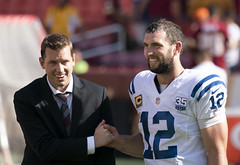
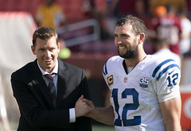

Top Weekly Story
Andrew Luck Retires from the NFL
 

After the game, Luck announced his decision during an impromptu 25-minute news conference. He said an official announcement
wasn't planned until Sunday afternoon, but he changed course once news broke during the game.
"I've been stuck in this process,"
Luck said, stopping several times to gather his emotions. "I haven't been able to live the life I want to live. It's taken the joy out of this
game ... the only way forward for me is to remove myself from football.
"This is not an easy decision. It's the hardest decision of my
life. But it is the right decision for me.''
Luck's early retirement ends what started as a promising career for the No. 1 overall pick in the
2012 draft, chosen to replace Peyton Manning. Luck led the Colts to the playoffs in each of his first three seasons in the NFL, including
back-to-back AFC South titles and an appearance in the AFC Championship Game in 2014.
But his career took a bad turn when he
suffered a shoulder injury in Week 3 of the 2015 season. He ended up missing 26 games -- including the entire 2017 season because
of shoulder, kidney and rib injuries. It was during the 2017 season while out that Luck questioned whether he would be able to continue
his career.
To read the rest of the article go to espn.com
By: Mike Wells, ESPN Staff Writer
Andrew Luck has suddenly retired from the NFL due to previous injuries he has been through.